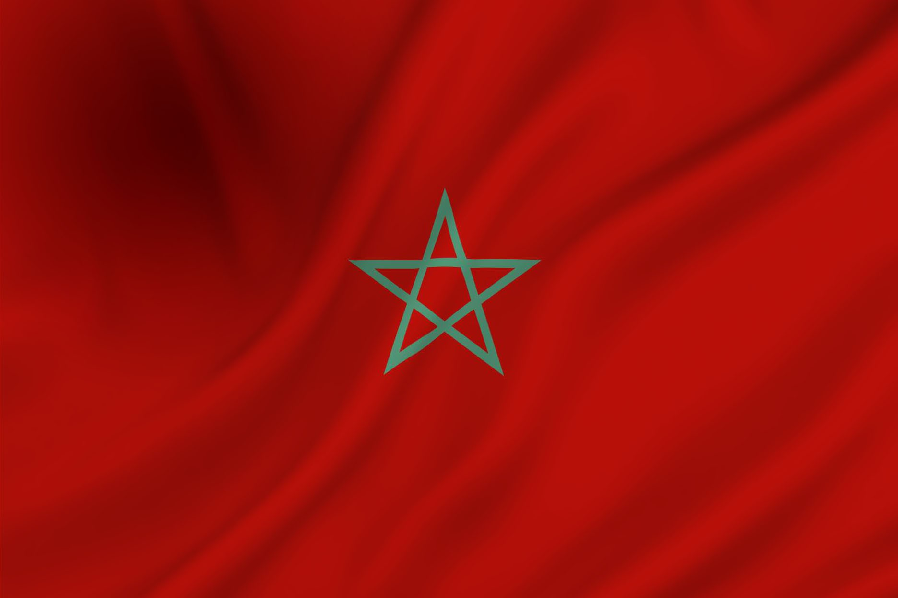
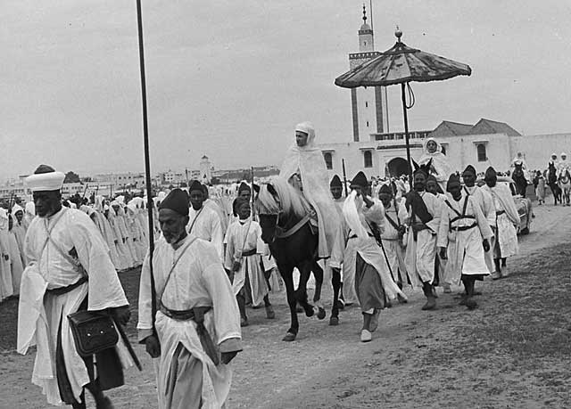

Marokko, officieel het Koninkrijk Marokko, is een land in noordelijk Afrika aan de kust
De oudste staat in het huidige Marokko was het inheemse
koninkrijk Mauretania en bestond vanaf 110 v. Chr. De moderne
staat Marokko is ontstaan toen het land zich onafhankelijk
verklaarde van Frankrijk en Spanje op 2 maart 1956.
De Frans-Spaanse bezetting van Marokko begon in 1912.
De hoofdstad van Marokko is Rabat en de grootste stad
is Casablanca. Andere belangrijke steden zijn:

De oorspronkelijke bevolking van Marokko werd gevormd door de Berbers.
Het eerste bekende feit van de geschiedenis van Marokko is de vestiging
van Fenicische handelsposten aan de Marokkaanse kust ca. 1200 v.Chr..
Daarna stichtten de Carthagers er handelsfactorijen. Nadat Carthago in
de Tweede Punische oorlog door het Romeinse Rijk werd verslagen, ging
Marokko onderdeel maken van het Berbers koninkrijk Mauretania, een
vazalstaat van Rome. Met de executie van de laatste Mauretanische
koning Ptolemaeus van Mauretania door keizer Caligula in 40 n. Chr.
kwam het gebied onder Romeins bestuur. Na de val van het Romeinse Rijk
veroverden de Vandalen (429) het land. Het Byzantijnse Rijk (533)
probeerde het gebied onder zijn macht te krijgen, maar het kon alleen
de stad Ceuta enige tijd onder controle houden.
In 682 veroverde het Islamitisch Kalifaat het gebied en werd de islam
geïntroduceerd. In 739 begon de Grote Berberopstand onder de Marokkaanse
Berberstammen. Deze verspreidde zich binnen een zeer korte periode over
heel de Maghreb en Spanje. Hoewel de opstand vier jaar later werd neergeslagen,
was de centrale macht van het Kalifaat sterk aan het afnemen. Vanaf het
begin van de achtste eeuw regeerden verschillende dynastieën over gebieden
in de Westelijke Maghreb: het koninkrijk van Nekor (710-1019), de Barghawata
(744-1058), de Idrisiden (780-974) en Sijilmasa (771-1051). De Berberse
Almoraviden verenigden in de 11e eeuw voor het eerst het huidige Marokko en
zij stichten de beroemde hoofdstad Marrakesh. Onder hun bewind zou het land
voor het eerst bekend komen te staan als Marokko. Bekende dynastieën waren
de Almohaden (1147-1269) en de Meriniden (1215-1465) en de Saadis (1509-1654).
Onder die eerste was Marokko enige tijd een wereldmacht. Vanaf de elfde eeuw
volgden vernietigende invallen van de Banu Hilal-bedoeïenen. Met hun komst
zou het land een versnelde periode van arabisering doormaken. De Arabische
migratie was een belangrijke oorzaak voor een lange periode van anarchie in
de Maghreb, waarin piraterij vrij spel kreeg.
Meer informatie kunt u op de website van wikipedia vinden
Of u kunt mij gaan mailen